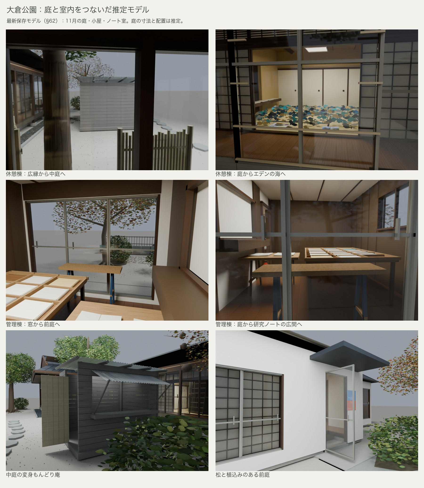
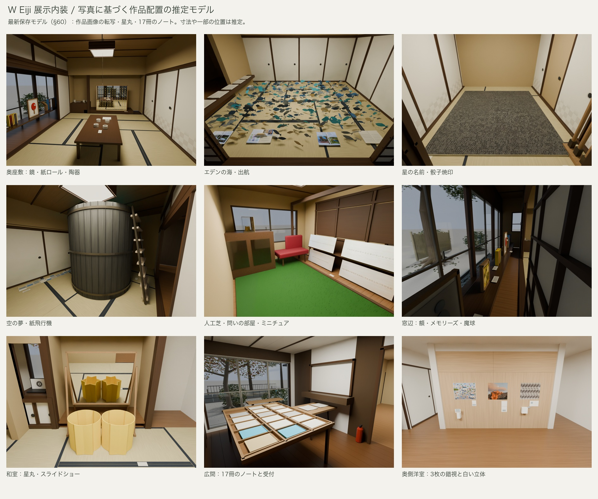
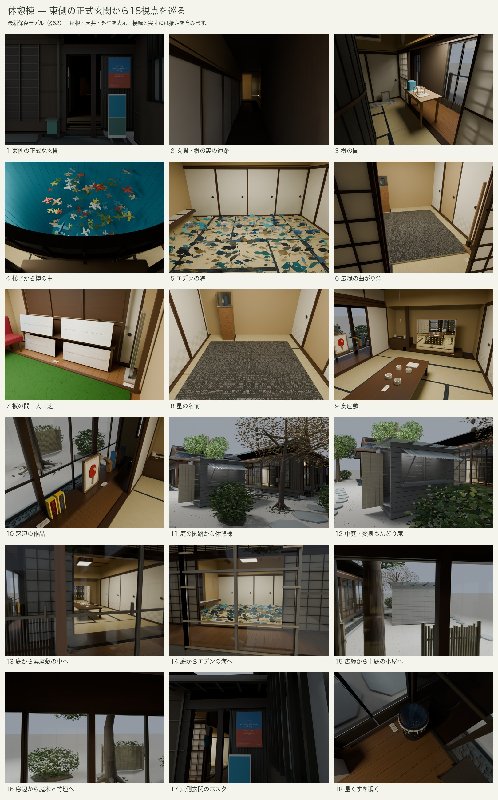
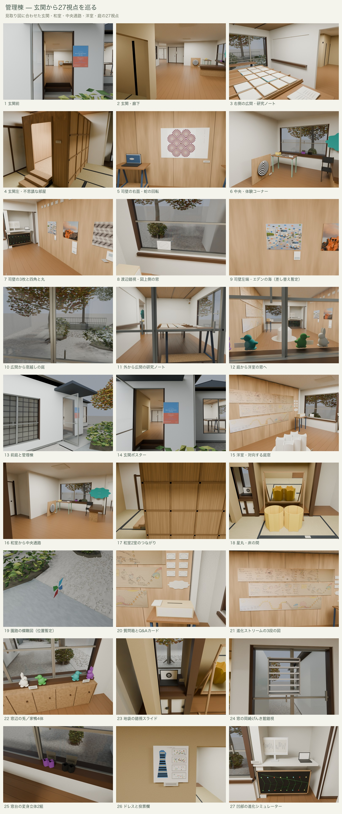
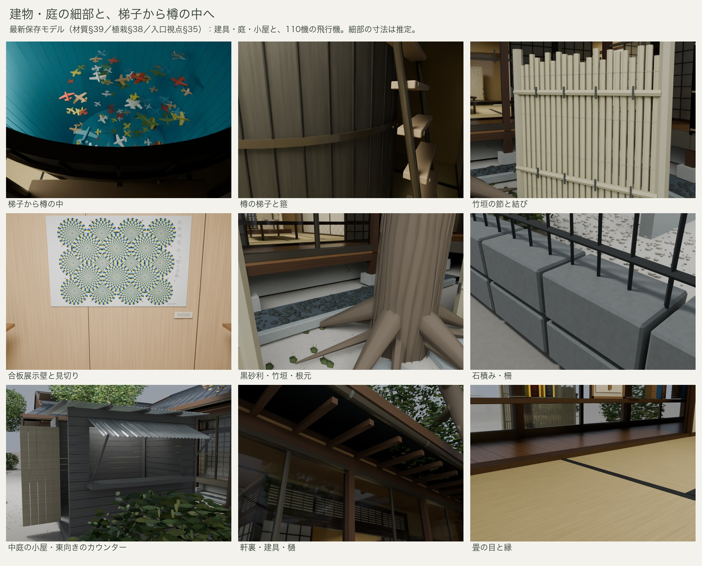
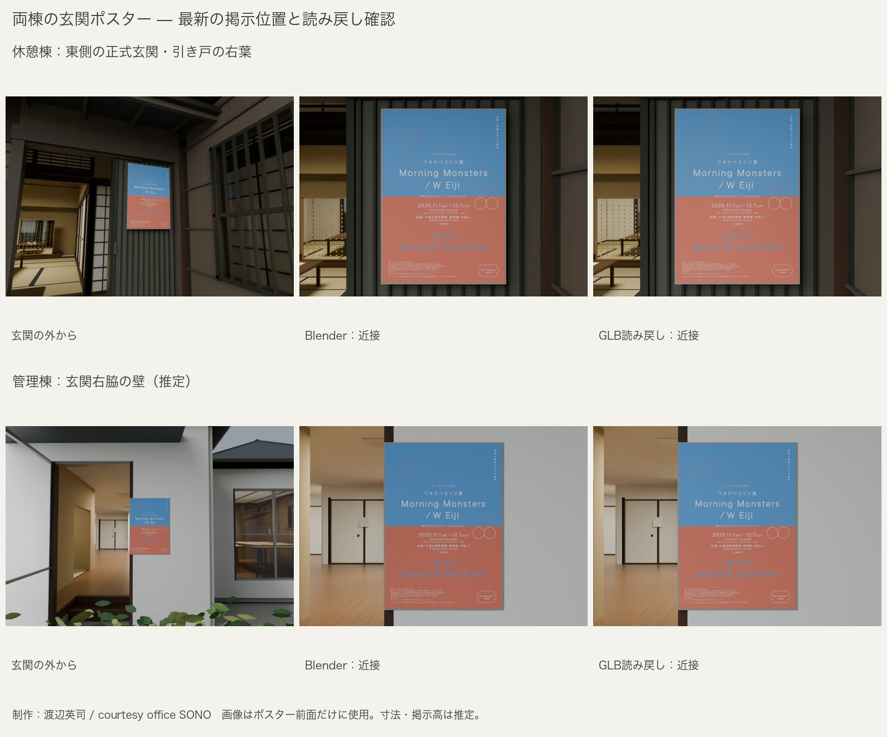
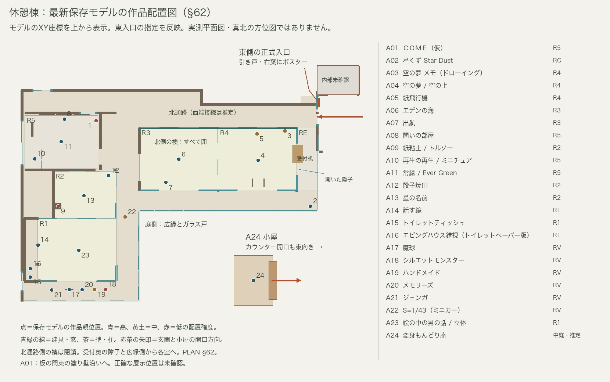
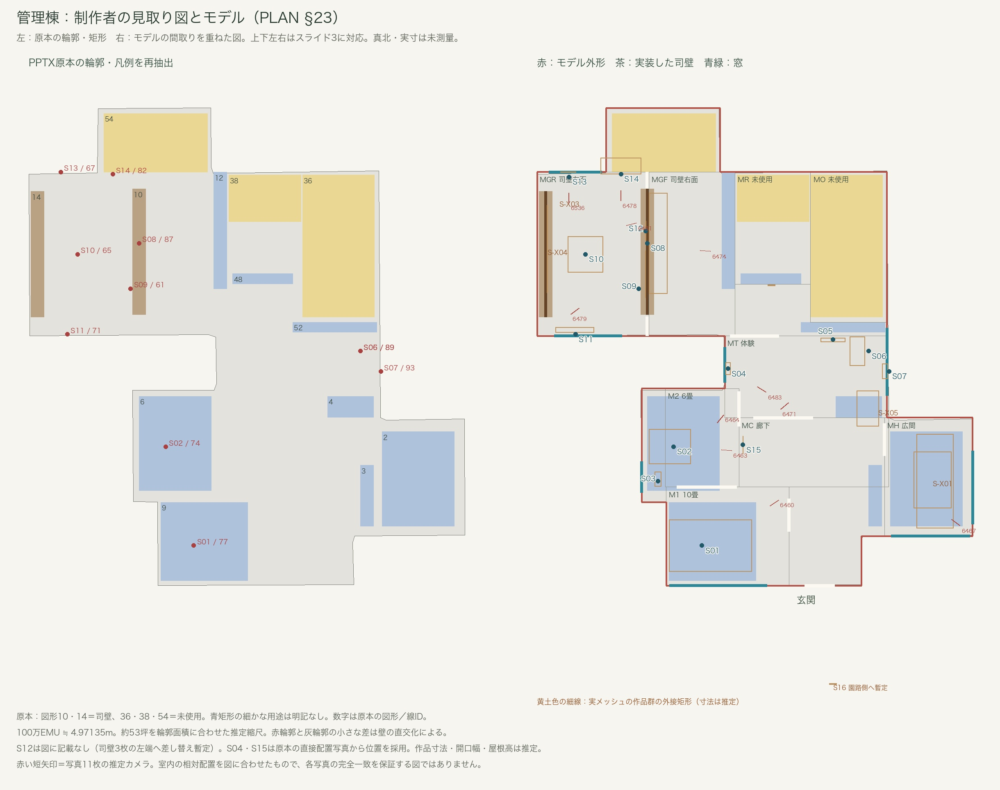

大倉公園 管理棟・休憩棟の 3D モデル
ワタナベエイジ展「Morning Monsters / W Eiji」（2025）の会場だった大倉公園の管理棟と休憩棟を、記録写真と大府市・文化財の公開情報から推定して Blender で復元したものです。寸法・庭の配置・室の接続には推定が含まれ、実測図に基づくものではありません。検討のために期間を限って置いています。
ブラウザで歩く
棟と視点を選び、ドラッグで見回し、WASD・矢印キーか画面の矢印で移動します。休憩棟の視点「梯子から樽の中」で梯子を上って《空の夢／空の上》の中を覗けます。休憩棟は約 70MB のデータを読むので、表示まで少し待ちます。パソコンの Chrome で確認しています。
Blender で開く
- rest.blend（休憩棟、約 10MB）
- management.blend（管理棟、約 4MB）
Blender 5.2 で作成。単位はメートル。開くと玄関前の視点で、タイムラインを再生すると玄関から各室を巡ります。屋根は Roof、天井は Ceilings のコレクションにあり、非表示にすると上から中を見られます。作品は Artworks、庭は Site にまとめてあります。
確認画像








記録
作品は概形と色で表し、錯視図版や作品写真は貼っていません。玄関のポスターと、管理棟の《蛇の回転錯視》のパネル（北岡明佳 作。手元の原画像は写真の版と配色が異なる暫定表示）、《エデンの海、錯視から解放された魚》の試作プリント（写真提供：渡辺英治／錯視画像：北岡明佳。掲出位置は暫定）、進化ストリームの 3 図（図：渡辺英治／撮影：青木兼治）、月の錯視（元写真の撮影者は未確認）とログビネンコ錯視（A. Logvinenko の図）のパネル（展示写真からの転写）だけ実物の画像を使っています。記録写真との比較画像は、掲載許諾の確認前のため含めていません。